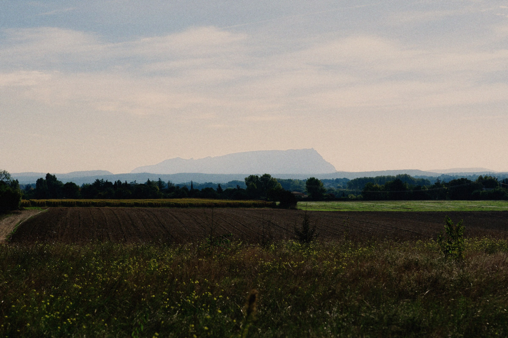
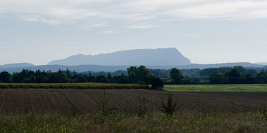
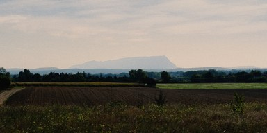

Provence
2026-10-04 · 7 photos
Before
Before and after (\)
Crop
Crop (C)
Nodes
Nodes (N)
Add photos
Add photos (⌘O)
Fit 12%
Zoom (Z toggles Fit and 100%, F full screen)
Neural · 42 ms · Display P3
Update ready
Export 3
⌘E

Signature · 100%
Sony A1 · A1M01739 · ISO 100 · 1/4000 · f/2.8
Add node
Bypass
Bypass this node (B)
Delete
2 of 7
Show mask
Show mask (M)
Expand
Give the graph most of the height
Input
Output
Main

01
Film

02
100%
Fit